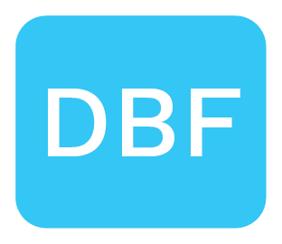

DBF Creative Coding
DBF Learning. 2022 - Present
Course Description
Tangible Computing explores the evolving state of computation as both a visual and embodied medium. Through projects and daily work, we cultivate an informed use of technology from the ground up; embracing both the precision and messiness of computers to generate unexpected and novel multi-sensory user experiences and design products. This knowledge will also help we develop deeper insights into emerging aesthetic principles and build algorithmic literacy. This course exposes the skills to create an interactive computer program and unpacks various visual cultures of computational aesthetics.
Learning Objectives
- Increased your coding confidence Be more confident applying ideas from new media art and interactive technology in your coding projects
- Move outside your comfort zone Be able to re-interpret things traditionally categorized either as software or as hardware where one can perceive the influence of the other
- Cultivate a innovation mentality Learn how to work with a variety of software technologies and using creative problem solving to generate novel user experiences.
- Work at a professional standards Learning working standards as a Computational Design Engineer at DBF.
Course Materials and Software
- Sketchbook. Always plan your projects on paper before writing any code.
- Laptop. or desktop..
- Sublime Text Text Editor
- NodeJS
- GitHub
- P5.js Processing for the Web
- Three.js 3D Library